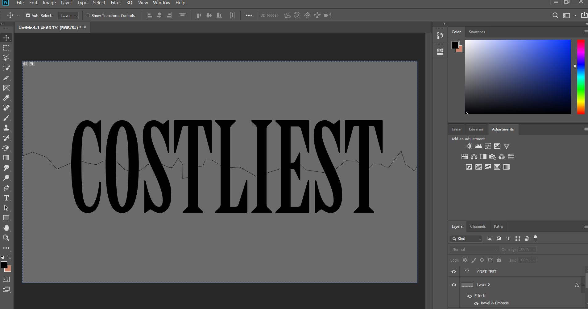

Kinetic Typography Video
This project is a kinetic typography video project from a digital design course I took in Spring of 2019. This project represents my creativity and skills using video and graphic editing softwares.
Upon receiving the project details, I began my process of sketching the storyboard as seen below. When working on the project I storyboarded the whole thing in order to avoid any idea blocks that I might have if I had just jumped right into making the video. To make the most of my time, I chose not to skip this step.
The software I used for this project includes Adobe Illustrator, Photoshop, and After Effects.


After hearing the project brief, my initial thoughts for a dialogue to use was from a film that I adimired and found really interesting. The speech is from Citizen Kane, a black and white film released in 1941 about the investigation of the last words of a scandalous tycoon.
After developing my sketches above, I had a good idea of how the video would flow with the 'Xanadu' description speech from the film. I then began creating any graphic and textual elements in Illustrator that could not be made using After Effects.
A lot of the graphic elements were created using Adobe Illustrator and Adobe Photoshop. These elements were then imported into Adobe After Effects to add the appropriate motion required to match my sketches
Reflection
Through doing the project I was in the mindset that this was going to be one of the greatest projects I had made in the two semesters I had been at school. During the process, I was thinking about how the project was based around a movie that I really admired and how I would need to work harder to achieve an outcome that would represent my appreciation for Citizen Kane. When I found out that I had not done as well as I was expecting, I was still satisfied with the skills I gained from doing the project and the quality of the end result. This project is one of the most important to me since It significantly developed my interest in videography and increased my skills in video editing with graphics and typography.